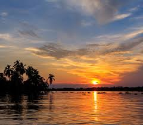
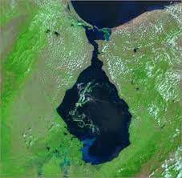
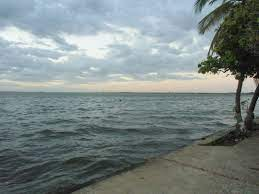
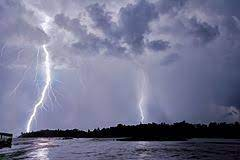
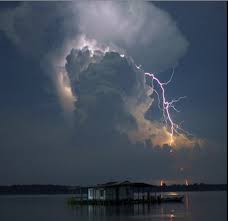
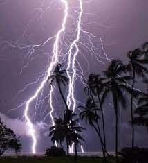

Lago de Maracaibo

El Lago de Maracaibo es un ancestral lago costero de agua dulce ubicado en la parte más occidental de Venezuela, entre los estados de Zulia, Trujillo y Mérida. Según los autores, se le define como una gran bahía semicerrada y salobre,1 o más comúnmente se lo considera un lago; con una superficie de entre 13 210 a 13 820 km², es el más grande de América Latina y el 19º entre los lagos más grandes del mundo.
En el extremo norte se conecta con el golfo de Venezuela por un estrecho de 55 km. Es alimentado por numerosos ríos, el más grande es el río Catatumbo.
La cuenca de Maracaibo es una de las zonas de mayor riqueza petrolífera del mundo con más de 15 000 pozos perforados en su cuenca desde 1914. En esta área se presenta el denominado relámpago del Catatumbo, fenómeno que, mediante 1 176 000 relámpagos por año, genera hasta cerca del 10% del ozono atmosférico del planeta.
Geología

El lago de Maracaibo es el más grande de Sudamérica. Está ubicado en el estado Zulia, en Venezuela, con extensiones máximas de 110 kilómetros de ancho y hasta 160 de largo, con una superficie aproximada de 13 820 kilómetros cuadrados y sus costas se extienden por 728 kilómetros, alcanzando una profundidad máxima de 50 metros en la estación lluviosa. Tiene una gran riqueza petrolífera en donde se extrae la mayor parte de la producción de crudo del país.
El lago de Maracaibo es un fenómeno excepcional en la geografía del mundo: es el único lago relacionado con el mar; y de hecho en su parte más norte se registran mareas marítimas en aguas particularmente salobres a pesar de las descargas de agua dulce provenientes de los ríos Catatumbo, Chama, Escalante, Motatán, Santa Ana, Apón y Palmar, entre otros.
Desde el lago, en dirección suroeste puede apreciarse el llamado relámpago del Catatumbo, un centelleo sin explosión en las altas capas atmosféricas, cuyas causas aún no están del todo claras y se debaten entre el choque de los vientos alisios con la muralla de accidentes orográficos de la cordillera de Los Andes; o la gran cantidad de gases inflamables que se desprenden de las fuentes petrolíferas del lago.
Ecosistema

El lago de Maracaibo posee aguas bastante oxigenadas lo que lo hace rico en algas y por ende en peces, posee una gran biodiversidad.
Especies como las garzas, los caimanes, camarones, cangrejo azul, iguanas, bagres, meros, lisas, bocachicos, peces armadillos, pelícanos y plantas de coco son los más comunes en el lago, también se han detectado la presencia rara de pavones y delfines.
Relámpago del Catatumbo

El relámpago del Catatumbo es un fenómeno meteorológico que se desarrolla en la cuenca del lago de Maracaibo, principalmente en la zona sur de dicho lago y en la cuenca inferior del río Catatumbo, río del cual procede su nombre. Es uno de los 5 fenómenos naturales más conocidos a nivel mundial.
Clima y Meteorología

En la zona sur del lago de Maracaibo se presenta el fenómeno meteorológico conocido como relámpago del Catatumbo, que se caracteriza por la aparición de una serie de relámpagos de manera casi continua y prácticamente silente. Este fenómeno se produce en nubes de gran desarrollo vertical que generan descargas eléctricas entre 1 y 4 kilómetros de altura, y es producto de una combinación de alta humedad en la superficie del lago, vientos recurrentes en horas de la tarde y un empinado gradiente altitudinal entre la cuenca del lago y las montañas circundantes (Perijá y la cordillera de Mérida).
Impacto Social y Turismo

El relámpago del Catatumbo es admirado por la sociedad venezolana, en especial en el estado noroccidental del Zulia, el cual tiene un rayo en su escudo oficial para simbolizar al fenómeno. También la letra del himno del Estado Zulia, cuyo autor es el zuliano Udón Pérez, incluye una estrofa que hace referencia a este fenómeno.